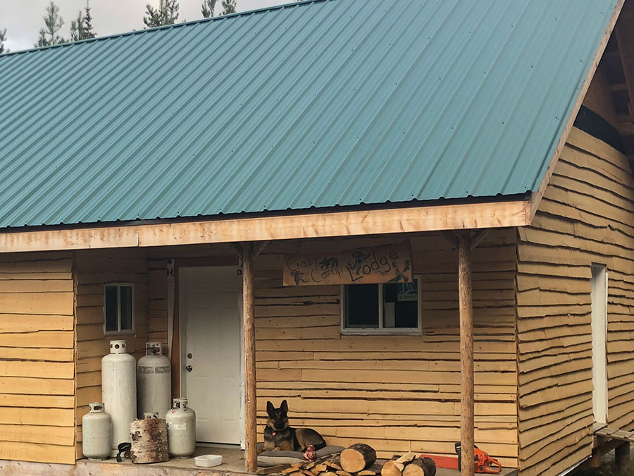
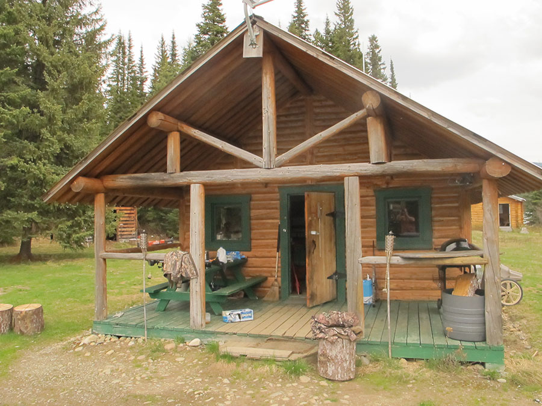
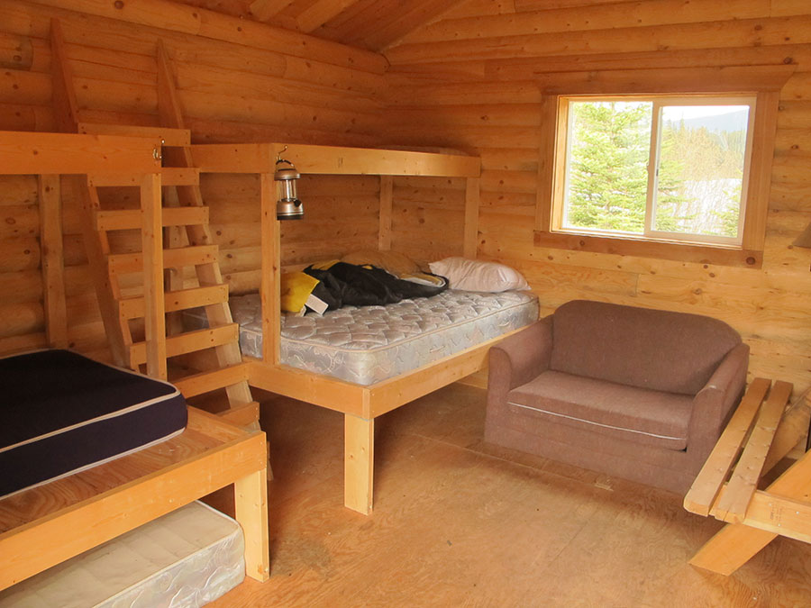
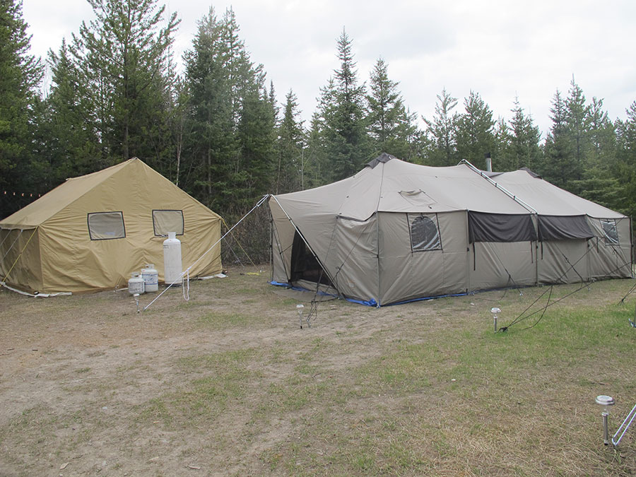
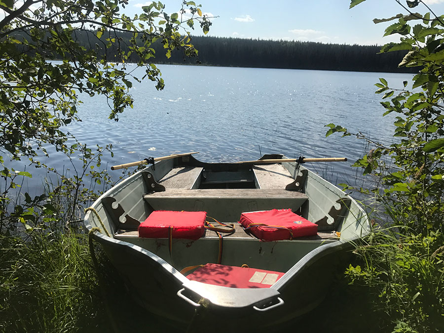

A family outfit, built on BC tradition.
One of the top black bear operations in British Columbia — and a camp people come back to.

Raised to hunt BC. Raising the next generation.
Mark was raised by his dad to love hunting in British Columbia, and he has passed that same love on to his own family. The family has a passion for the outdoors and is living the dream of running a guide-outfitting business in the wilds of beautiful British Columbia.
We're told all the time that the atmosphere is like no other — the fun in camp, the friendly banter and competition between guides, the practical jokes. We pride ourselves on good old-fashioned Canadian hospitality, and most clients become good friends who stay in touch over the years.
— Mark
Leadership & conservation
Guide Outfitters Association of BC
Mark has served as President of GOABC, the province's guide-outfitting association.
BC Fishing Resorts & Outfitters
Past President of the BC Fishing Resorts and Outfitters Association.
Wildlife DNA program
Initiated one of the largest wildlife DNA-collection programs, and works with international conservationist Shane Mahoney.
Two hunting areas in northern BC.
Moose and bear hunts cover a 900 square-mile plateau northwest of Prince George. Mountain goat hunts run in the mountains southwest of Smithers.
All the comforts of home
We run several comfortable camps and guide cabins, depending on the hunt and the territory. All are professionally built, strong and weatherproof, with good wood heat, mattresses on every bunk and home-cooked meals in a central cabin.
For more remote hunt locations we operate from a tent camp, with separate tents for sleeping and for gathering and cooking.






